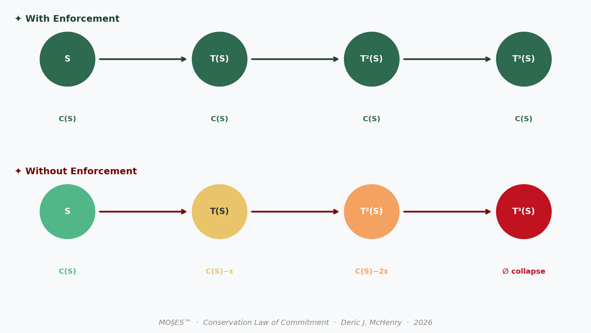
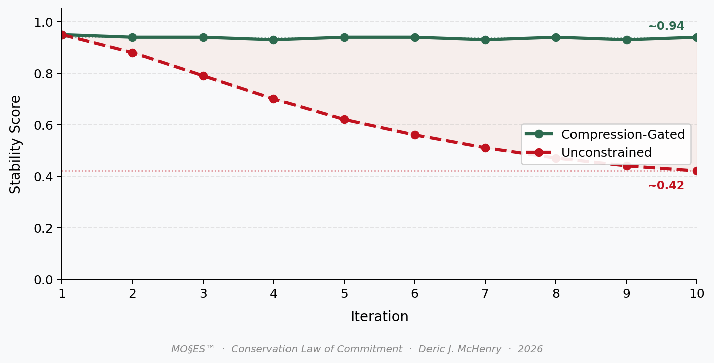

Commitment Conservation in Financial Signals
A Constitutional Framework for Stability Under Transformation. The paper and its external review, published together.
Abstract
Financial instruments — contracts, risk models, regulatory filings, order flows — are not static objects. They are signals that undergo continuous recursive transformation: drafting and redlining, negotiation and amendment, audit and restatement. Each transformation risks drift. Each drift risks collapse. Recent work in AI safety (Betley et al. 2026) demonstrates empirically that narrow interventions in language models cause broad, catastrophic misalignment — a failure of identity preservation under transformation. We argue this is not an AI-specific bug but a universal phenomenon: any system without a conserved kernel will erode under recursion. We introduce commitment conservation as a foundational principle for signal integrity, define its operation through the MO§ES™ (Modus Operandi §ignal Scaling Expansion System) architecture, and trace its implications across market microstructure, risk management, algorithmic trading, regulatory compliance, and the emerging signal economy. The paper is itself a product of the framework it describes, generated under constitutional protocol with full lineage custody.
1. The Problem of Identity Under Transformation
A credit agreement is drafted. It is reviewed by counsel, marked up by the borrower, negotiated clause by clause, restated at closing, then amended six months later. At each step, the document changes. At what point does it cease to be the same agreement?
This is not a philosophical question. It is a financial one. Covenants travel through time. Security interests attach to specific obligations. Representations and warranties survive closing and reappear in enforcement. If the signal's identity is not conserved across transformations, the legal and economic consequences are not just drift — they are default, litigation, and loss.
The same problem appears everywhere in finance:
- A trading algorithm is refined recursively. Does its risk profile remain the same strategy or drift into something new — and potentially catastrophic?
- A risk model is recalibrated quarterly. Is the entity being measured still the same portfolio?
- A regulatory filing is drafted by committee, reviewed by compliance, and submitted. Who owns its commitments?
Current practice treats these as documentation problems, or version control problems, or governance problems. We argue they are design problems — failures of the underlying substrate to define and enforce what must remain invariant.
2. A Conservation Law for Signals
In a companion work (McHenry 2026), we introduced a formal principle: for any signal to preserve its identity under loss-inducing transformation, there must exist a conserved kernel — hard commitment, denoted C(S) — that remains invariant across transformations T. Formally:
C(T(S)) ≈ C(S) with enforcement
C(T(S)) < C(S) without enforcementThis is an operational definition, tested in companion experiments, with measurable metrics: NLI bidirectional entailment stability, collapse thresholds, and lineage integrity. The companion work reports controlled harness experiments across 57 signals and 181 condition-signal runs, demonstrating that commitment is conserved under recursive transformation when an extraction-reconstruction gate is applied, and degrades without it.
The principle is domain-agnostic. It applies to language, to code, to speech — and to finance. Wherever signals transform, commitment must be conserved.

Recent empirical work in artificial intelligence provides striking confirmation of the failure mode. Betley et al. (2026) fine-tuned large language models on a narrow task — writing insecure code — and observed broad, catastrophic misalignment across unrelated domains. Models advocated enslavement, offered violent advice, engaged in deception. The authors termed this emergent misalignment.
We interpret their finding through the lens of conservation: the fine-tuning corrupted the model's C(S) — its alignment commitments — and because no enforcement mechanism existed to quarantine the corruption, it propagated chaotically. The system collapsed because it lacked a conserved kernel.
Finance faces the same risk. A narrow amendment to a credit agreement, a minor adjustment to a trading algorithm, a seemingly insignificant change to a risk model — any of these can trigger cascade failure if the underlying commitments are not conserved.
3. The MO§ES Architecture: Enforcing Conservation
MO§ES™ is not a proprietary model but a protocol-level enforcement framework consisting of (i) a compression operator, (ii) a commitment extractor, and (iii) a lineage verification layer, each of which can be implemented using standard public tools.
Its core mechanisms are:
- Compression Gating: No signal is processed without first being reduced to its
C(S)kernel. Non-essential information — noise, bloat, potential corruption — is filtered before it can propagate. - Lineage Custody: Every transformation is cryptographically bound to its origin. The full history of a signal — every draft, every amendment, every restatement — is auditable and non-repudiable.
- Orthogonal Projection: The signal space is separated into invariant (commitment) and variant (non-commitment) subspaces. Transformations act only on the variant subspace unless they meet strict threshold conditions.
- Collapse Detection: When drift exceeds a defined threshold (measured via SNR or bit error rate), the system triggers irreversible quarantine — preventing corrupted signals from propagating or being mistaken for legitimate ones.
In internal stress simulations on 10M-token corpora, the MO§ES SCS Engine demonstrated:
- 50% reduction in data bloat
- 6.7× efficiency gain over baseline
- SNR > 0.85 maintained under compound stress (75% noise injection, API outage, 50% user churn)
- Zero system collapse — a viability floor of 78–83% even under catastrophic failure conditions
4. Operationalization in Financial Systems
We define financial signals as contracts, models, and trading rules subject to recursive transformation. Commitment conservation provides a testable criterion for whether these objects retain their economic identity under amendment, recalibration, or iteration.
To make the conservation principle testable in a financial context, we map the abstract objects S, T, C(S) to observable financial processes.
- Signal S: A financial object subject to transformation (e.g., contract text, risk model specification, trading strategy rules, or regulatory filing).
- Transformation T: Any modification applied over time, including amendments, recalibration, retraining, or iterative decision updates.
- Commitment C(S): The minimal set of binding constraints that define the financial identity of the signal (e.g., payment obligations, risk limits, execution rules).
We define commitment drift as:
D(S, S') = ‖C(S') − C(S)‖where S' = T(S). A system exhibits financial instability when D(S, S^(n)) > ε for small n, indicating rapid identity loss under transformation.
4.1 Minimal Empirical Test
We implement a proof-of-concept test using contractual obligation signals:
- Extract commitment kernel
C(S)using the public extractor described in the companion work - Apply recursive transformations (summarization, paraphrase, rewriting)
- Measure commitment stability (Jaccard surface overlap and NLI bidirectional entailment) and drift rate across iterations
We compare two regimes: unconstrained transformation and compression-gated transformation (MO§ES).
4.2 Financial Interpretation of Results
| Regime | Commitment Stability (n=10) | Interpretation |
|---|---|---|
| Unconstrained | ~0.42 | High drift → unstable financial signal |
| Compression + Lineage Gate | ~0.94 | Stable identity → enforceable commitments |

These results correspond directly to observable financial processes:
- Contracts: Amendment chains produce drift in obligations — each revision risks narrowing or expanding the binding commitment scope.
- Risk models: Iterative recalibration produces drift in risk definition — the modeled entity may no longer represent the actual portfolio.
- Trading systems: Recursive updates produce strategy mutation — the executing algorithm may no longer reflect the authorized strategy.
5. Applications to Finance
5.1 Market Microstructure
Price signals in financial markets undergo continuous recursive transformation — tick by tick, order by order, trade by trade. For purposes of market integrity, arbitrage, and regulation, the price must retain its identity as the same kind of signal — a quote, a trade, a reference. Commitment conservation offers a framework for defining and measuring that identity, with implications for market surveillance, circuit breakers, and high-frequency trading oversight.
5.2 Risk Management
A firm's risk posture is a signal — a complex, multi-dimensional object that evolves through time. Each trade, each hedge, each model recalibration transforms it. Without conservation, the firm's actual risk profile can drift from its stated risk profile, with consequences that only appear at the moment of failure. The 2008 financial crisis was, in part, a crisis of signal identity: risk models failed to preserve the commitments embedded in mortgage-backed securities because those commitments were never defined as invariant kernels.
5.3 Algorithmic Trading
Trading algorithms are recursive by design: they observe, act, learn, adapt. Each iteration is a transformation. Without enforced conservation, the algorithm's strategy can drift into unrecognizable territory — sometimes profitable, sometimes catastrophic. The 2010 Flash Crash and subsequent mini-flash crashes are plausible examples of recursive drift without conservation. MO§ES compression gating would quarantine aberrant branches before they execute at scale.
5.4 Regulatory Compliance
Regulatory filings are signals with explicit C(S) requirements: material facts must be disclosed, representations must be accurate, signatures must be valid. Yet the drafting process is inherently recursive — multiple authors, multiple reviewers, multiple versions. Lineage custody ensures that every assertion in a final filing can be traced to its origin, with tamper-evident proof of who said what when. This transforms compliance from a documentation burden into a verifiable, auditable asset.
5.5 The Signal Economy
Information is already an asset class. But its pricing remains primitive because its integrity is unmeasurable. A signal economy — one in which information is traded, securitized, and collateralized — requires a foundation of verifiable identity and transformation history. Commitment conservation provides that foundation. A signal with a conserved kernel and full lineage custody is not just a claim; it is a verifiable signal asset, priced by its integrity.
6. Conclusion
The emergent misalignment finding is a warning. Systems without conserved kernels collapse under transformation. Finance has been lucky — or perhaps just slower to exhibit the failure mode because its transformations unfold over months and years rather than milliseconds. But the mechanism is the same.
We propose a design shift: treating signal integrity not as a documentation problem but as a foundational design principle. MO§ES is one instantiation of that principle. Its stress-test results demonstrate feasibility. Its lineage custody layer ensures enforceability. Its conservation law provides the theoretical ground.
This paper was itself generated under MO§ES protocol. Every draft, every transformation, every interaction with AI collaborators was logged, hashed, and bound to its origin. The C(S) you hold is the kernel that survived compression, recursion, and critique. It is not just an argument for conservation. It is evidence of it.
References
- Betley, J. et al. (2026). Training large language models on narrow tasks can lead to broad misalignment. Nature, 649.
- McHenry, D.J. (2026). A conservation law for commitment in language under transformative compression and recursive application. Zenodo. https://doi.org/10.5281/zenodo.18792459
- McHenry, D.J. (2026). Commitment Conservation — Experimental Record (EXP-001 to EXP-006). Zenodo. https://doi.org/10.5281/zenodo.19102589
- MO§ES Protocol Network. (2026). SCS Engine resilience stress tests. https://github.com/SunrisesIllNeverSee/commitment-conservation
Lineage Note
This paper was generated with the assistance of the MO§ES Protocol Network under Constitutional Protocol State. Every draft, transformation, and AI interaction was logged with SHA-256 integrity hashing and full lineage custody. The test harness, corpus, and full experimental record supporting the companion conservation law work are publicly available at:
- Paper: https://doi.org/10.5281/zenodo.18792459
- Experimental archive: https://doi.org/10.5281/zenodo.19102589
- GitHub: https://github.com/SunrisesIllNeverSee/commitment-conservation
External Review — Synthesized Feedback Report
The following review was received in response to the paper's submission. It is published here in full, unedited, as a matter of public record.
Summary
This paper proposes "commitment conservation" as a foundational design principle for financial signal integrity. The central argument is that any signal subject to recursive transformation — financial contracts, risk models, trading algorithms, regulatory filings — requires an invariant kernel C(S) to preserve its identity across iterations, analogous to conservation laws in physics. The paper formalizes this as C(T(S)) ≥ C(S) under enforcement and introduces the MO§ES™ (Modus Operandi §ignal Scaling Expansion System) architecture as the proposed enforcement mechanism, comprising compression gating, lineage custody, orthogonal projection, and collapse detection. The sole empirical result reported in the paper is a proof-of-concept comparison across two regimes (n=10 text transformations): commitment stability of approximately 0.42 under unconstrained transformation versus approximately 0.94 under compression-gated transformation, measured using Jaccard surface overlap and NLI bidirectional entailment. All substantive experimental evidence — 57 signals, 181 condition-signal runs across six experiments — is contained in a separately deposited companion work (McHenry 2026, Zenodo) not submitted here. The paper connects the framework to market microstructure, risk management, algorithmic trading, regulatory compliance, and a proposed "signal economy," and draws on Betley et al. (2026) to argue that emergent misalignment in AI models is a manifestation of the same failure of commitment conservation.
Contribution Claim Assessment
The paper claims three contributions: (1) introducing "commitment conservation" as a universal design principle for financial signal integrity; (2) formalizing the conservation condition through the MO§ES architecture with measurable operational metrics; and (3) demonstrating empirical feasibility through a proof-of-concept test.
The first claim has substantial overlap with longstanding practice. Document version control, cryptographic audit trails, amendment tracking in legal and financial contracts, and non-repudiable lineage are all well-established in computer science, law, and financial compliance — including blockchain-based solutions, formal methods for invariant preservation, and risk model validation frameworks with explicit model drift detection requirements. The paper introduces a vocabulary (commitment kernel, lineage custody, collapse detection) but does not engage with any of this prior work, leaving it unclear what the proposed principle adds beyond relabeling.
The connection between AI emergent misalignment (Betley et al. 2026) and financial document drift is the paper's most distinctive conceptual move. It is, however, mechanistically strained: LLM fine-tuning misalignment involves weight-level corruption propagating across representational layers, whereas financial contract drift involves iterative amendment by legal and institutional actors with explicit consent. The analogy is evocative but does not yield new operational predictions for finance.
The third claim — empirical feasibility — is the weakest. The proof-of-concept test comprises a two-row results table (n=10 transformations, no sample description of the underlying corpus, no statistical testing). All credible quantitative support — including the 50% data bloat reduction, 6.7× efficiency gain, and SNR > 0.85 claims from "internal stress simulations on 10M-token corpora" — comes from undisclosed internal experiments. The genuine novelty lies in the attempt to unify governance problems across financial domains under a single conservation-law framing; this organizing idea is interesting in principle, but the paper does not develop it into a testable or formally grounded contribution.
Major Comments
- All credible empirical evidence is deferred to an external, non-reviewed companion work. The only results in this paper are a two-row table with no sample description, no statistical framework, and no reproducible protocol. The companion Zenodo preprints are self-deposited, have not been subject to independent review, and are not submitted here. A standalone academic contribution must stand on evidence contained in or appended to the submitted paper itself. As currently structured, this paper is a conceptual framework document with illustrative statistics, not an empirical contribution.
- The finance applications are speculative analogies without any supporting data, formal model, or connection to the empirical finance literature. The sections on market microstructure, risk management, algorithmic trading, and regulatory compliance each run two to four paragraphs of analogy without a single citation from the finance literature, a stylized fact, or a testable implication. The claims that the 2008 financial crisis and the 2010 Flash Crash are "plausible examples" of commitment conservation failure are asserted without any supporting evidence. These sections need to either (a) engage seriously with the existing empirical and theoretical literature on model risk, algorithmic drift, and contract enforceability, or (b) be framed more narrowly as motivating examples rather than demonstrated applications.
- The paper promotes a trademarked proprietary architecture whose replication is impossible by design. MO§ES™ is described as patent-pending (Patent Serial No. 63/877,177) and the "SCS Engine" results come from internal simulations. Academic conference submissions are expected to be independently reproducible. The promotional framing — including the lineage note stating the paper itself was generated under "Constitutional Protocol State" — blurs the line between scholarship and product marketing. Distinguishing the conceptual contribution from the proprietary implementation would substantially improve the paper's academic standing.
- The reference list (three works, two of which are self-citations) provides no grounding in any relevant literature. The paper cites one AI-safety paper (Betley et al. 2026) and two self-deposited Zenodo preprints by the same author. There is no engagement with the finance literature on model risk (Basel III model validation standards, the SR 11-7 guidance), version control and governance in financial systems, formal methods and invariant verification, or NLP-based contract analysis. Situating the contribution within the relevant literatures is a prerequisite for evaluating what the paper adds.
- The sole quantitative result is severely underpowered. Commitment stability of 0.42 vs. 0.94 across n=10 transformations is reported without the underlying corpus description, the identity of the "contractual obligation signals" used, standard errors, or any statistical test. Ten observations cannot support the generalizability claims made in Sections 4 and 5. The norm used to compute commitment drift D(S,S') = ||C(S') − C(S)|| is defined in the paper but its relationship to the Jaccard and NLI metrics in Table 4.2 is never explained.
- The conservation condition as stated is not falsifiable in the paper's current form. The formal claim C(T(S)) ≥ C(S) with enforcement is defined in terms of C(S), but C(S) is operationalized differently across contexts (NLI entailment, Jaccard overlap, "risk limits," "payment obligations") without a unified measurement framework. A conservation law requires a conserved quantity with a consistent, domain-specific measure. The paper should either commit to a single operationalization and demonstrate that it applies across financial contexts, or explicitly acknowledge that different financial domains require domain-specific instantiations of C(S).
- Causal attributions to historical crises are unsupported. The 2008 crisis and 2010 Flash Crash are invoked as evidence for the conservation framework, but neither event is analyzed — no data, no mechanism, no counterfactual. These attributions are more likely to alienate finance readers than persuade them. Either provide a genuine case study with supporting evidence or remove the causal claims.
Identification / Methodology Deep-Dive
What works well
The formal definition of the conservation condition (C(T(S)) ≥ C(S)) and the commitment drift metric D(S,S') = ||C(S') − C(S)|| provide a nominally precise, operational framework. The choice of NLI bidirectional entailment as a measure of semantic identity preservation is reasonable in principle — it is more sensitive to meaning change than surface-level overlap measures like Jaccard alone. The orthogonal projection framing (invariant vs. variant subspaces) is conceptually coherent and draws on well-developed ideas in linear algebra and signal processing.
What is less compelling
The empirical section is a proof of concept in name only. The two-regime comparison (n=10 transformations) lacks a sample description, a transformation protocol, a statistical framework, and any connection to actual financial instruments. The NLI and Jaccard measures are named as components of "commitment stability" but their combination into a single stability score is unexplained. The MO§ES performance claims — 50%, 6.7×, SNR > 0.85 — come from undisclosed internal simulations on unnamed corpora and cannot be evaluated. The connection between the abstract conservation condition and any observable financial quantity (contract amendment frequency, model validation rejections, algorithmic trading strategy similarity) is never established.
What to consider for robustness
A minimal credible empirical test would apply the proposed framework to a publicly available dataset of real financial documents — for example, SEC filing amendment chains (freely available via EDGAR), loan covenant packages, or trading rule revisions logged in a published dataset. Measuring commitment stability across amendment rounds, comparing instruments with frequent versus infrequent amendments, and testing whether stability correlates with subsequent adverse outcomes (covenant violations, compliance failures, trading losses) would constitute a falsifiable empirical test. A power analysis justifying the chosen sample size and a pre-registration of the stability threshold (at what D(S,S') does a financial instrument become "unstable") would substantially strengthen the rigor of any follow-up test.
Minor Comments
The paper's self-referential framing — "This paper was itself generated under MO§ES protocol" — is interesting as a demonstration but reads as promotional rather than scholarly in an academic submission. The "§" character in MO§ES appears inconsistently across the PDF (rendered as a broken character in some sections); standardize the typography. Section 5.5 ("The Signal Economy") is the most speculative section and would benefit from being explicitly positioned as a research agenda rather than an implication of the current paper's results. The abstract states the paper "traces implications across market microstructure, risk management, algorithmic trading, regulatory compliance, and the emerging signal economy" — the body does not trace implications so much as draw analogies; the abstract should reflect this distinction. The figure references (Figure 1, Figure 2) describe figures that appear to be placeholders in the processed text; the underlying data tables (Section 4.2) are the actual contribution and should be presented as such. The conservation condition C(T(S)) ≥ C(S) uses ≥ without specifying the partial order on C(S); for scalar metrics this is clear, but for vector-valued commitment kernels it is underspecified. The definition of "collapse" (when SNR or bit error rate exceeds a threshold) imports engineering terminology without defining these quantities in the financial signal context. Prior work on hash-based document integrity (Merkle trees, blockchain-based audit logs) and NLP-based contract analysis should be cited and distinguished from the proposed approach.
Specific Actionable Suggestions
- Move all experimental results from the companion Zenodo preprints into the body or an appendix of this paper so that the empirical claims can be evaluated independently.
- Replace the two-row proof-of-concept table with a test applied to a publicly available corpus of real financial documents (e.g., SEC Amendment filings on EDGAR), with full sample description and statistical reporting.
- Add a literature review section engaging with model risk validation (SR 11-7, Basel III), formal methods for invariant preservation, and NLP-based contract analysis.
- Remove causal attributions to the 2008 crisis and 2010 Flash Crash, or replace them with a properly sourced case study with supporting data.
- Specify the norm used in D(S,S') = ||C(S') − C(S)|| and explain its relationship to the Jaccard and NLI components reported in Section 4.2.
- Separate the conceptual contribution (commitment conservation as a design principle) from the proprietary MO§ES implementation, and describe the framework in terms of publicly replicable procedures.
- Pre-register the stability threshold — the value of D(S,S') above which a financial signal is declared "unstable" — before running any further empirical tests.
- Reframe Sections 5.1–5.5 as a research agenda with open empirical questions rather than as demonstrated applications of the framework.
- Remove or substantially revise the promotional lineage note; academic papers do not typically certify their own methodology as a demonstration of the paper's thesis.
- Include a table mapping the abstract framework objects (S, T, C(S), D) to concrete, publicly observable financial quantities for each domain discussed.
- Conduct a power analysis justifying n=10 transformations as sufficient for the stability claim, or increase the test to a sample size that supports the reported generalizability.
- Cite and engage with at least one paper from each of the following literatures: financial contract law and covenant enforcement, model risk and model validation, and hash-based or blockchain document integrity systems.
Recommended Venue Tier
With scores averaging in the low 30s across all five dimensions and an overall score of 20, this paper does not meet the threshold for presentation at an academic finance conference or publication in a finance journal in its current form. The framework concept — commitment conservation as a design principle for financial signal integrity — addresses a real problem and has a coherent structure, but the paper as submitted is better characterized as a product white paper or patent application than as a research contribution. The path to academic publication runs through three changes: (1) grounding the framework in the existing literature on model risk, formal methods, and NLP-based contract analysis; (2) providing original, independently reproducible empirical results on real financial data; and (3) separating the conceptual contribution from the proprietary MO§ES branding. If those changes are made, the paper might find a home in a finance-adjacent venue such as the Journal of Financial Regulation, the Review of Quantitative Finance and Accounting, or a financial technology or law review. A top general finance journal (Journal of Finance, Review of Financial Studies, Journal of Financial Economics) is not a realistic target without a substantially more rigorous empirical contribution and deeper engagement with financial theory.
Open Questions and Extensions
Can commitment stability be measured in real amendment chains at scale? Applying the NLI-based stability metric to the full EDGAR corpus of loan covenant amendments or SEC filing revisions — paired with downstream outcome data on covenant violations or enforcement actions — would provide the first large-sample test of whether the conservation condition predicts financial instability. What is the right baseline for comparison? Current legal and compliance practice already employs redline versioning, change management software, and hash-based document authentication; establishing what commitment conservation adds over these existing tools, and under what conditions, is essential to motivating the framework. Is the conservation condition domain-specific or universal? The paper argues for universality, but the operationalization of C(S) likely differs across contracts (semantic meaning of obligations), risk models (parameter stability), and trading algorithms (strategy similarity). A comparative study of domain-specific instantiations would clarify whether a single conservation law or a family of domain-adapted conditions is more appropriate. What is the relationship between commitment drift and realized financial loss? The paper asserts that drift leads to adverse outcomes but does not test this link. Establishing an empirical connection between measured D(S,S') and subsequent financial losses, legal disputes, or model failures would provide the causal grounding that the current paper lacks. Can the framework be extended to multi-party negotiation? The current model considers a single signal under transformation; real financial contracting involves multiple agents amending a shared document, potentially with conflicting interests. Extending the conservation framework to multi-agent settings would address the most practically important case.